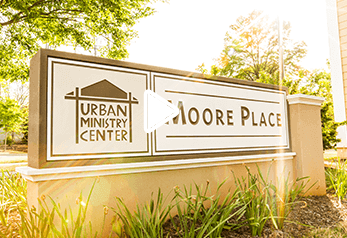

About the Author
Kathy Izard is an award-winning author and speaker who helped bring transformation to Charlotte in homelessness, housing and mental health. Her memoir The Hundred Story Home has been featured on NPR and inspires people to be changemakers in their communities.
Appearances (click to view)


Videos

A walkthrough of Moore Place, Charlotte's first real solution to homelessness.

Neighbor Eugene Coleman Tells his Story
Solomon Agunbiade, a resident of Moore Place in Charlotte, NC, shares how the counseling and housing he received through Urban Ministry Center has changed his life and his dreams for the future.